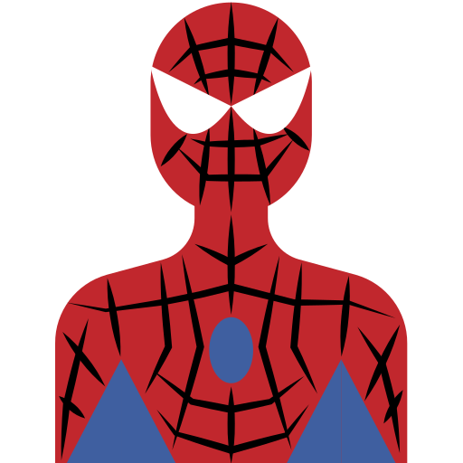

Следуваат повеќе информации за мене и моите интереси
Пуштете музика и да се запознаеме !
Информации:
-Дата на раѓање: 31.07.2001
-Град на раѓање: Битола
-Хороскопски знак: Лав

Омилени активности
-Бордање
-Играње со мојата мачка
-Играње Sims


Омилени филмови
-Inception
-Thor: Ragnarok
-Bridge to Terabithia
-The DaVinci's Code
и уште многу sci fi трилогии
Омилени серии
-Game of Thrones
-Sherlock
-Modern Family
-Black mirror
